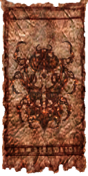
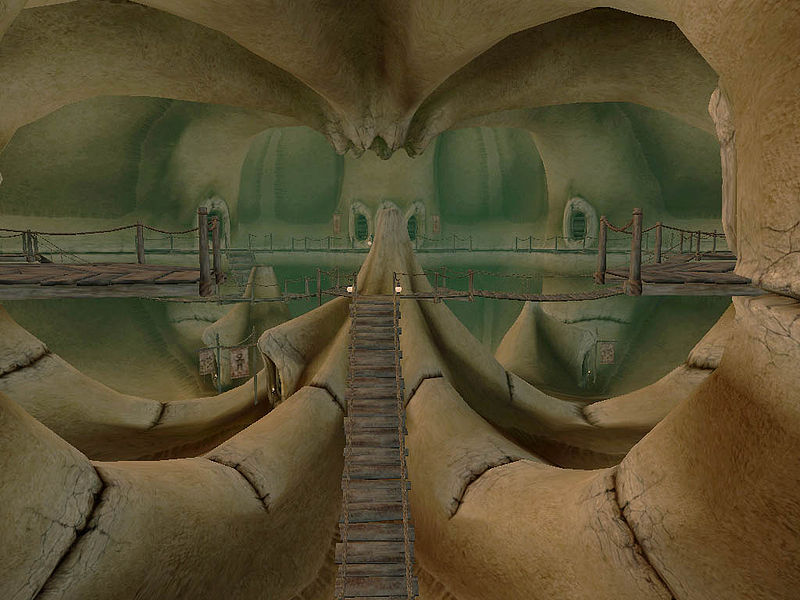

Morrowind:Ald'ruhn
Morrowind: Places
| Ald'ruhn |
| Alignment: Redoran |
| Region: Ashlands |
|
Transport:
Almsivi Intervention:
Divine Intervention:
Guild Guide:
Silt Strider:
|
Services:
|
|  |
 Ald'ruhn |
|  The Manor District, "Under-Skar" |
 Plaza overlooking the Fighters and Mages Guild, with the Rat in the Pot and the stairs in the background |
The town of Ald'ruhn (sometimes spelled Ald-ruhn) is a dusty cluster of Redoran-style buildings nestled against the southwest slopes of Red Mountain, just outside the Ghostfence. Its name means "Elder Home" in Dunmeri. Ald'ruhn recently became the council seat of House Redoran, and all of the councilors maintain expansive mansions in Under-Skar. The entire manor district is built inside the hollowed shell of an ancient Emperor land-crab known as Skar. The weather in Ald'ruhn is under heavy influence of nearby Red Mountain, as daily Ash Storms bring the threat of the Blight right to the doorstep of House Redoran. High guard towers overlook the town, and the Guards, clad in traditional Bonemold Armor, have to kill the occasional stray Cliff Racer.
Manor District
Also known as "Under-Skar", the mansions of most Redoran Councilors are found in the Manor District. On the bottom floor of the giant shell are several fine shops, a Clothier, an Alchemist and an Enchanter with a wide array of spells and useful magical items. The Redoran Council Hall holds training facilities, guest rooms and services for kinsmen, and the temporary home of Councilor Morvayn.
Upper Ald'ruhn
Following the steps north, a few traders, a bookseller and a rugged outdoor smithy are clustered around the giant shell. To the west is the Council Club and the Ald Skar Inn, where the Ashlander trader Hassour Zainsubani resides. On the east side of town is a large Tribunal Temple with shrines giving blessings. There are many smaller residential houses here, as well as the Morvayn Manor, now abandoned after an invasion of Ash Creatures.
Lower Ald'ruhn
Just inside the City gates, around a dust swept plaza, are the Guild of Fighters, the Guild of Mages and representatives of the Thieves Guild are located in The Rat In the Pot Inn, rounding out the Imperial presence in town. The Silt Strider is located along the wall, just north of the city gate and Guard Towers.
People
Located in the entrance of the Redoran Council Hall, Neminda will give guidance, if you want to become a Redoran Kinsman. Athyn Sarethi will be your sponsor in advancing to higher ranks and is your first contact in order to be named Redoran Hortator. At the Fighters Guild, Percius Mercius is the steward. Edwinna Elbert is the Mages Guild steward. Goren Andarys is the Morag Tong steward. Tuls Valen is the ranking cleric of the Ald'ruhn Tribunal Temple. The Bosmer Aengoth the Jeweler is the local boss of the Thieves Guild at The Rat In the Pot. The Master Trainer in Conjuration, Methal Seran, resides in the Temple.
Getting There and Around
Dust-swept roads lead northwest to Maar Gan and Gnisis villages and by a circuitous western route to Caldera, Balmora, and points south. The road to Balmora swings northwest to avoid the barren wastes, and curves around towards the west until it heads south again to Caldera. Between Ald'ruhn and Caldera are many sidepaths; watch for signposts, or you'll get lost. Gnaar Mok is a long and exceptionally unpleasant walk west to the coast and then south; there are no trails or marked routes. Casual travelers ill-equipped for the attacks of wild, blighted beasts and brigands should keep to the roads and travel services. A Foyada leads past the Buckmoth Legion Fort to the Ghostfence, Ghostgate and Red Mountain.
The silt strider port is along the western town wall, north of West Gate. Silt strider service goes from Ald'ruhn to Balmora, Gnisis, Khuul, or Maar Gan. The Guild guide at the Mages Guild teleport you to Balmora, Vivec, Caldera, and Sadrith Mora for a modest fee.